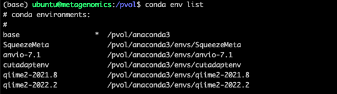

Chapter 2 Getting started
Prerequisites will be listed in each sub chapter separately. Following a few general recommendations:
Access to computational resources
To process data you will need a personal computer or online computational resources with sufficient number of CPUs, working memory and storage. If you want to run most of the processing on a personal computer then I’d recommend a minimum of 4 CPUs, 16 Gb RAM and 500 Gb storage. However, please note that some alignment tasks require more RAM, hence some of the steps (e.g. taxonomic classifications) may require a more powerful resource. The advantage of using a personal computer is that you can frequently update the latest packages without relying on a university administrator to do that for you. Furthermore, with a personal computer you wont need to share with others, making it easier to run the packages without a workload manager.
Some university may provide their own access to a high performance computer (HPC) for staff and students and likely have certain packages pre-installed. In such cases a batch workload manger such as Slurm may be used, to manage multiple users trying to run computationally heavy jobs. This works fine too but its a bit of a hassle and I would use such an HPC only if really necessary, i.e. smaller jobs on my personal computer and bigger jobs on the HPC.
I am not aware that RMIT University offers that type of service yet.
In Australia there is also the ARDC Nectar Research Cloud, which provides free resources to Universities. This is basically like providing access to an online Linux computer with complete freedom to install any packages as if it was your own. If you are a student you can create a trial account with your student email address (Using your ID only; without the student.edu.au) and check out how it all works, albeit with limited resources. The Nectar service also provides tuturials for starters. However, to get serious with Nectar, you have to request more resources, which is a fairly straight-forward process. Check out the eligibilities and chat to your supervisor if you are interested.
There are also commercial options, which probably offer very similar type of services to Nectar.
In addition, there is the awesome Galaxy Australia platform, which is an open web-based resource that also contains many tutorials and workflows specific to bioinformatics. Definitely worth checking that out too.
This workbook will be based on using the Nectar Research cloud.
File storage
Working with sequencing data may require you do handle large amounts of data. From experience, a run of a 600µl pool (6-10pM) of amplicons in 2x301 Miseq cycles may produce around 10-20 Gb of FASTQ files. Much more can be expected for NextSeq runs or for long-read sequencing.
Once a Miseq run has finished it is typically available to download from the Illumina Basespace account. After a few runs, the data can accumulate quickly. Hence, persistent storage space is required. As long as you have the Basespace account you can keep a copy of the FASTQ file online. However, Basespace may delete your data if the account has been inactive for more than 6 months. Alternatively, data can be upload onto a public repository for persistent storage, such as the Sequence Reads Archives. If you have access to a research cloud or commercial computational resources then you may store data on those. Personally, I prefer a 1TB solid state harddrive.
Command Line
Many of the tools used are managed through command line. Cloud servers are also accessed through command line. That means there is no graphical user interphase and all commands, including installation and running of packages are done through lines of codes on a simple window interphase. This window is called Terminal (Mac, Linux) or Command Prompt application (Windows). There are lots of online sources to help you get started with command line. One example here: https://towardsdatascience.com/a-quick-guide-to-using-command-line-terminal-96815b97b955
Data storage browser
To upload, download, move, rename files on any cloud computer or high performance computer (HPC) at your institution, you will also require a cloud storage browser, such as Cyberduck (Mac) or PuTTY (Windows).
R and R studio
R has become an essential research language. If you want to progress in research it is almost inevitable for you to learn. Just do it. :). Perhaps start here if you dont know where else to start: https://education.rstudio.com/learn/beginner/. It lists some great step-by-step tutorials on how to install R and Rstudio and then explains the basics.
If you are like me, then you simply copy and paste code from other sites and see what happens. This book should provide you with the required information to enable you to follow the workflows. In case you get stuck, you can either chat to me directly or write on the GitHub Discussion Page for this GitBook (chrismitbiz/ABlab-workflows/discussions/).
At the same time you will want to do short courses (eg. from edX Data Science: R Basics) that delve a little deeper into different data structures such as data frames, matrices, lists and the syntax to arrange stuff. Over time you understand what different lines of code mean and can trouble shoot when things don’t work. And things often don’t work. You will get used to troubleshooting code :).
Environment managers
Package and environment managers are extremely useful for your workflows. They help to install and run software packages such as qiime2, into individual ‘environments’ independent of your operating system. The environment manager is installed once and from there you use it to install individual packages. The most commonly used environment manager is Conda. Learn more about it here: https://docs.conda.io/projects/conda/en/latest/user-guide/getting-started.html
Conda can be installed by either installing Anaconda or Miniconda. Boths works the same way. Anaconda requires 5 Gb of discspace and installs everything you can possibly need, while Miniconda is just the raw bones and lets you install things one by one.
Most of the commands to manage environments are done in command line using a terminal. There is also a graphical installer that makes handling the environments a little more visual. That would be my go to. Learn more here: www.anaconda.com.
Once conda installed you can always check what environments are installed with the command conda env list. In my case the output looks like this:

There are several other environment managers. We are also using Docker in our work but the learning curve is a bit steeper so we wont get into it here.
Explore the help functions
Packages such as qiime2 have great resources to help you understand how to run any of the available commands. For example if you dont know what input parameters are available for the qiime command
qiime feature-classifier classify-sklearn, you can simply enter this command into your Terminal (with the qiime environment activated, if it is installed with Conda) and add a --help at the end: qiime feature-classifier classify-sklearn --help.
Or you just want to know what other commands qiime has in its repertoire, you can run qiime --help.
For example, this
conda activate qiime2-2022.2
qiime --help Gives

GitHub account
This GitBook, including all its files, is hosted on one of my GitHub repositories (https://github.com/chrismitbiz/ABlab-workflows). If you have any comments you can ask a question on the Discussion Page of this repository. You require a GitHub account to do that. It is free.
Workflows from other lab groups
Searching for “amplicon-sequencing” under “Topics” on GitHub gave 37 results.
nf-core/ampliseq
On the top of that list is the nf-core/ampliseq pipeline developed by the nf-core community. It is based on a software called Nextflow which allows to put different processes into a pipeline. This is great for doing things a little more reproducible but it requires you to be fairly knowledgeable with Linux, container software, config files etc.. Not great to learn stuff for beginners.Tools-Microbiome-Analysis
Tools-Microbiome-Analysis is a websites containing a comprehensive list of R packages and, more importantly, tutorials related to analysis of microbial amplicons and ecology. Really good reference to go back to every now and then. Highly recommended.grimmlab/MicrobiomeBestPracticeReview
Essential paper to read (Current challenges and best-practice protocols for microbiome analysis, 2021) and a great workflow resource on GitHub. Essential read. The Grimm lab in Munich published this paper as well as developed a python and R-based workflow that assists with the recommended best practices (amplicon as well as metagenomic workflows).KasperSkytte/ampvis2
Ampviz2 is an R-package to visualise and analyse 16S rRNA amplicon data. It is always more convenient to have packages that have the details and optics worked out for you. Like phyloseq, the ampviz2 package combines different tables from data (E.g. otu table, taxonomic table, phylogenetic tree, sample data etc) and then provides different functions to apply to that combined object to visualise the data.